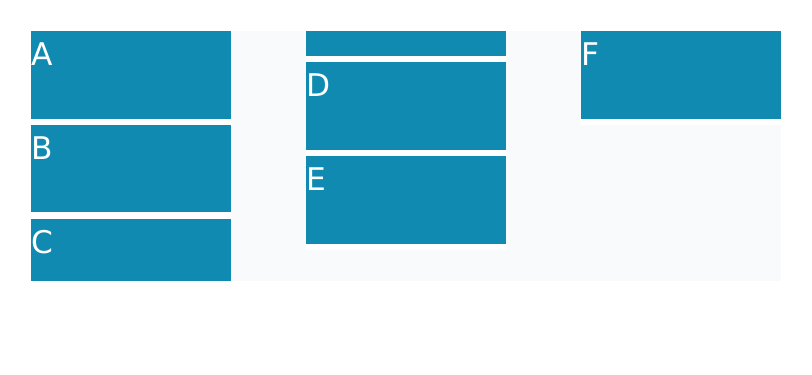
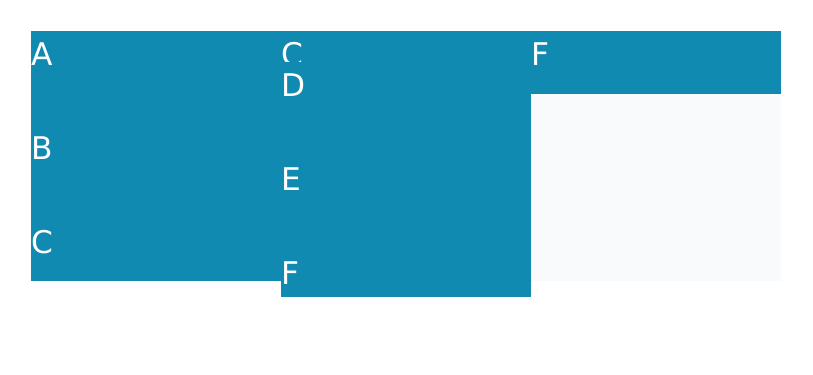
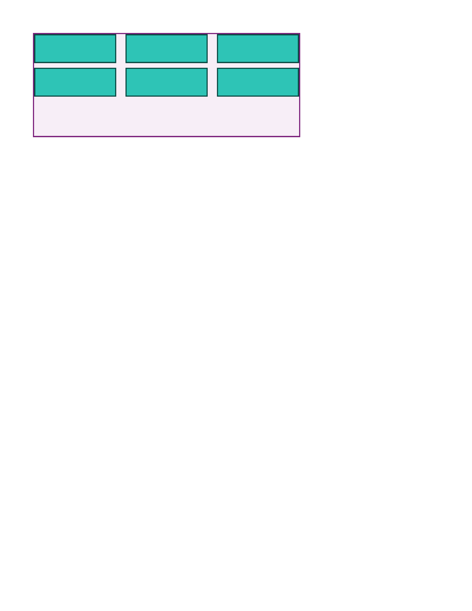
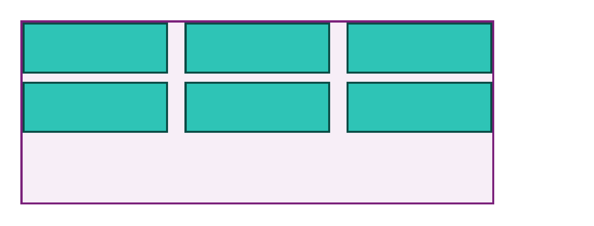
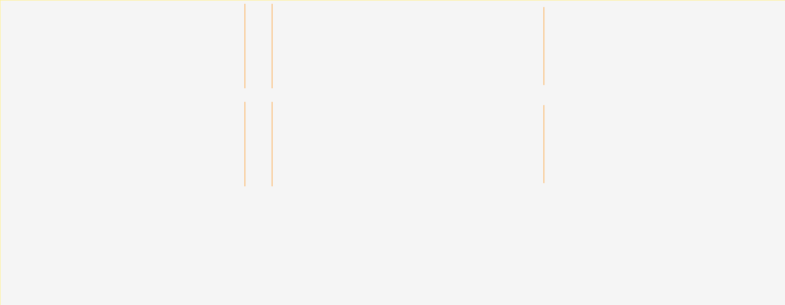

column-gap — 66.67% all categories ↑
FAIL 22.03% multicol-column-gap-percentage · percentage · REALExtra−5.1px Bmissing 4.4%extra 27.1%ΔE 22.1


diff colours:MissingExtraColorErrGeomShiftAA edgeMatchAA / edge-jitter = cross-rasterizer measurement ceiling, not a bug.
why: extra paint where Chrome is blank (27.1%)
column-gap:10% must resolve against the multicol container and narrow the three columns accordingly; catches parsers that store percentages but drop them during column layout.
regions (6)
| class | bbox (CSS px) | area% | magnitude | reason |
|---|---|---|---|---|
| Extra | 0,0 → 175,85 | 19.47 | extra paint where Chrome is blank (19.5%) | |
| Missing | 176,21 → 240,28 | 2.31 | content clipped/truncated (2.3% missing) | |
| Extra | 82,14 → 86,20 | 0.11 | extra paint where Chrome is blank (0.1%) | |
| GeometrySize | 89,44 → 93,51 | 0.03 | ΔRGB(-186,-91,-60) | box −5.1px on bottom edge (size/box-model mismatch) |
| GeometrySize | 177,4 → 181,11 | 0.03 | ΔRGB(-186,-91,-60) | box −5.1px on bottom edge (size/box-model mismatch) |
| GeometrySize | 89,13 → 92,20 | 0.02 | ΔRGB(-220,-108,-71) | box −5.1px on bottom edge (size/box-model mismatch) |
source · cases/multicol/multicol-column-gap-percentage.html
1<!doctype html>
2<html>
3<head>
4 <meta charset="utf-8">
5 <style>
6 @page { size: 260px 120px; margin: 0; }
7 html { font-family: ParitySans; line-height: 1.5; }
8 * { margin: 0; box-sizing: border-box; }
9 .cols { margin: 10px; width: 240px; height: 80px; column-count: 3; column-gap: 10%; column-fill: auto; background: #f8fafc; }
10 .item { height: 30px; background: #118ab2; color: #ffffff; font-size: 10px; border-bottom: 2px solid #ffffff; }
11 </style>
12</head>
13<body>
14 <div class="cols">
15 <div class="item">A</div>
16 <div class="item">B</div>
17 <div class="item">C</div>
18 <div class="item">D</div>
19 <div class="item">E</div>
20 <div class="item">F</div>
21 </div>
22</body>
23</html>
PASS 0.30% multicol-column-gap · pxGeometryShift


diff colours:MissingExtraColorErrGeomShiftAA edgeMatchAA / edge-jitter = cross-rasterizer measurement ceiling, not a bug.
why: content shifted ~0.0px beyond page-origin calibration
Three-column container with an explicit 40px column-gap separating the tracks; tests inter-column spacing.
regions (6)
| class | bbox (CSS px) | area% | magnitude | reason |
|---|---|---|---|---|
| GeometryShift | 127,2 → 127,52 | 0.02 | shift(0.3,0.0) | content shifted (0.3,0.0)px beyond page-origin calibration |
| GeometryShift | 167,2 → 167,52 | 0.02 | shift(0.3,0.0) | content shifted (0.3,0.0)px beyond page-origin calibration |
| GeometryShift | 293,2 → 293,52 | 0.02 | shift(-0.3,0.0) | content shifted (-0.3,0.0)px beyond page-origin calibration |
| GeometryShift | 333,2 → 333,52 | 0.02 | shift(-0.3,0.0) | content shifted (-0.3,0.0)px beyond page-origin calibration |
| GeometryShift | 127,60 → 127,110 | 0.02 | shift(0.3,0.0) | content shifted (0.3,0.0)px beyond page-origin calibration |
| GeometryShift | 167,60 → 167,110 | 0.02 | shift(0.3,0.0) | content shifted (0.3,0.0)px beyond page-origin calibration |
source · cases/multicol/multicol-column-gap.html
1<!DOCTYPE html>
2<html lang="en">
3<head>
4<meta charset="utf-8">
5<title>multicol column-gap</title>
6<style>
7 @page { size: 577px 221px; margin: 0; }
8 html { font-family: ParitySans; line-height: 1.5; }
9 * { margin: 0; box-sizing: border-box; }
10 html, body { background: #ffffff; }
11 .cols {
12 column-count: 3;
13 column-gap: 40px;
14 width: 460px;
15 height: 180px;
16 margin: 20px;
17 background: #f7eef7;
18 border: 2px solid #7a1f7a;
19 }
20 .block {
21 height: 50px;
22 margin-bottom: 8px;
23 background: #2ec4b6;
24 border: 2px solid #0a4a44;
25 }
26</style>
27</head>
28<body>
29 <div class="cols">
30 <div class="block"></div>
31 <div class="block"></div>
32 <div class="block"></div>
33 <div class="block"></div>
34 <div class="block"></div>
35 <div class="block"></div>
36 </div>
37</body>
38</html>
PASS 0.00% multicol-column-gap-normal · normalAaOnly



diff colours:MissingExtraColorErrGeomShiftAA edgeMatchAA / edge-jitter = cross-rasterizer measurement ceiling, not a bug.
why: differences confined to glyph AA edges — measurement ceiling, not a bug
Three-column container with no explicit column-gap; the normal default (1em = font-size) separates the tracks.
source · cases/multicol/multicol-column-gap-normal.html
1<!DOCTYPE html>
2<html lang="en">
3<head>
4<meta charset="utf-8">
5<title>multicol column-gap normal</title>
6<style>
7 @page { size: 579px 221px; margin: 0; }
8 html { font-family: ParitySans; line-height: 1.5; }
9 * { margin: 0; box-sizing: border-box; }
10 html, body { background: #ffffff; }
11 .cols {
12 column-count: 3;
13 font-size: 16px;
14 width: 462px;
15 height: 180px;
16 margin: 20px;
17 background: #f7eef7;
18 border: 2px solid #7a1f7a;
19 }
20 .block {
21 height: 50px;
22 margin-bottom: 8px;
23 background: #2ec4b6;
24 border: 2px solid #0a4a44;
25 }
26</style>
27</head>
28<body>
29 <div class="cols">
30 <div class="block"></div>
31 <div class="block"></div>
32 <div class="block"></div>
33 <div class="block"></div>
34 <div class="block"></div>
35 <div class="block"></div>
36 </div>
37</body>
38</html>